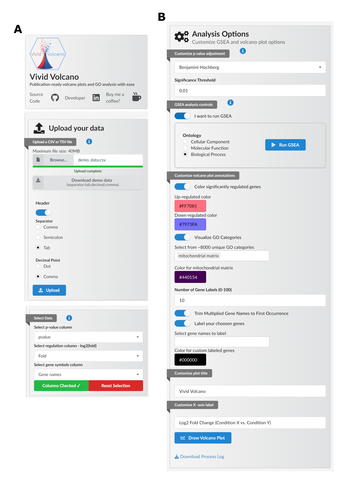
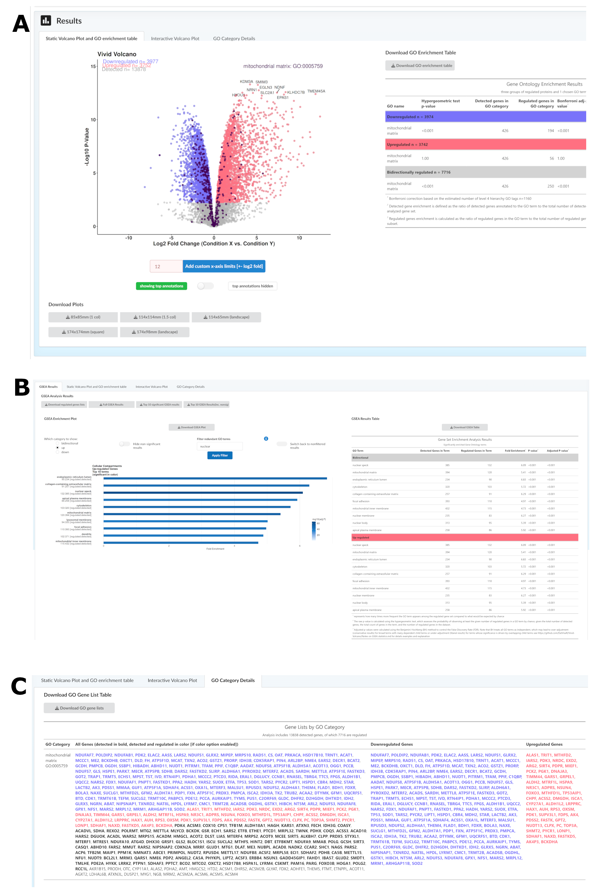

Vivid Volcano: Empowering Non-Bioinformaticians to Analyze Pre-Processed Omics Data
Tomasz M. Stępkowski ![]()
Summary
Vivid Volcano is an R Shiny web application – an intuitive tool that helps experimental scientists with no bioinformatics background explore and analyze pre-processed omics data. It enables users to perform crucial bioinformatic analyses without the help of specialists. With Vivid Volcano, one can create highly customizable, publication-ready volcano plots and perform comprehensive data exploration, and gene ontology (GO) enrichment analysis. Users can download variously formatted publication-ready plots and neatly formatted tables that adhere to scientific standards. Vivid Volcano empowers both exploratory and explanatory data analysis.
Statement of need
Modern biological research relies heavily on omics technologies (genomics, proteomics, transcriptomics, etc. ) that generate large, complex datasets requiring specialized analysis and processing by bioinformaticians – experts with a unique combination of programming, statistics, and data science skills blended with biology domain knowledge(Manzoni et al. 2018). These experts build analysis pipelines which produce pre-processed data conveying metadata on experiments and statistical results for the changes in expression of thousands of proteins, genes, etc. However, to draw valid biological conclusions, this pre-processed data must be explored and explained by subdomain experts who are usually experimentalists who designed the experiments. Those often do not have strong computational skills to effectively explore data and visualize crucial conclusions. Despite the widespread adoption of omics technologies in biological research, many experimental scientists struggle with data analysis due to technical barriers and communication challenges between computational and experimental disciplines, even with bioinformatician support.
Vivid Volcano was designed with two basic aims: 1. Empowering experimental biologists with a tool that can help them explore and analyze pre-processed omics data on their own 2. Lowering the workload for bioinformaticians who can focus on more statistically and computationally challenging tasks such as integration of complex multiomics data
Vivid Volcano addresses a critical need in the biological research community by empowering wet-lab scientists to independently analyze and interpret preprocessed omics data without requiring programming expertise or extensive bioinformatics support. The application provides an accessible interface for uploading and diagnosing preprocessed omics data, performing customized statistical analyses including gene set enrichment analysis across more than 8,000 GO categories, and generating publication-ready visualizations. Unlike many existing tools, Vivid Volcano maintains a simple and efficient design that does not rely on Bioconductor libraries, making it more accessible and easier to maintain. Vivid Volcano was designed to provide a smooth and intuitive user experience. For more advanced users who would like to validate the under-the-hood processes, the application also implements a process log system that tracks data processing outcomes, facilitating debugging and enabling analysis of app functionality. These features collectively enable experimental biologists to gain deeper insights from their omics data, accelerate research workflows, and produce publication-quality outputs without advanced computational skills.
In summary Vivid Volcano has been designed based on firsthand experience with the challenges faced by experimental biologists working with omics data and aims to provide comprehensive yet accessible solutions for generating publication-ready outputs from preprocessed omics datasets.
The application is available online at https://datviser-vivid-volcano.share.connect.posit.cloud/, making it readily accessible to researchers worldwide.
If you would like to run the application locally, it can be easily installed by following the instructions and using the automatic installer (for UNIX systems) available on the repository page: https://github.com/DatViseR/Vivid-Volcano. The full source code and the instructions for windows installation are also available there.
Technical description and implementation
Vivid Volcano is built as a modular R Shiny web application leveraging the robust reactive programming model that Shiny provides. The application architecture is characterized by clear separation between the user interface, server logic, and data processing components. The core functionality is implemented in R, with CSS for custom styling and JavaScript for enhanced interactivity. The application utilizes several key R packages, among others: shiny for the web framework (Chang et al. 2024) , shiny.semantic(Stachura et al. 2024) for user interface, DT for interactive data tables(Xie, Cheng, and Tan 2024) , ggplot2(Wickham 2016) and plotly(Sievert 2020) for generating publication-quality visualizations, GT for publication ready tables(Iannone et al. 2024) and shinyjs(Attali 2021) and shinyalert(Attali and Edwards 2024) for improved user experience . For statistical analysis, the application employs basic R operations and custom functions for ontology enrichment that don’t rely on Bioconductor dependencies, making the application more accessible and maintainable as a web tool. Data processing is handled through dplyr, tidyr, and other tidyverse packages which provide efficient data manipulation capabilities[Wickham et al. (2023)](Wickham, Vaughan, and Girlich 2024) . The application implements a custom logging system to track all data transformations, ensuring transparency and reproducibility of results. Vivid Volcano’s modular design allows for straightforward extension and maintenance, with clearly separated UI modules for data upload, visualization, statistical analysis, and results export. The application is deployed on Posit Connect Cloud (formerly RStudio Cloud), making it accessible via web browser without requiring local installation.
Statistics and Limitations
Vivid Volcano takes an innovative approach to gene set enrichment analysis by prioritizing speed and accessibility without sacrificing essential statistical rigor. Unlike many similar tools, it does not rely on Bioconductor libraries, which makes the application significantly faster, more lightweight, and better suited for web-based deployment and non-technical user. This independence from heavy computational dependencies allows researchers to analyze data quickly in a browser interface, without requiring specialized software installation. Standard Bioconductor packages typically operate on complex data structures and specialized objects that, while powerful for comprehensive analyses, introduce significant computational overhead unsuitable for responsive web applications. Vivid Volcano addresses this limitation by storing crucial Gene Ontology information in highly optimized binary parquet files—a column-oriented data format designed for efficient querying and retrieval. This streamlined approach provides rapid access to approximately 8,000 GO categories and their gene associations without the memory and processing demands of traditional Bioconductor implementations. Vivid Volcano’s gene set enrichment analysis is based on the hypergeometric test, a robust method for determining whether specific gene sets are overrepresented among regulated genes. This test calculates the probability of observing the particular overlap between regulated genes and genes belonging to specific GO categories by chance. By comparing the actual number of regulated genes in a category against what would be expected randomly, the test provides a measure of enrichment. The implementation utilizes four key values: the total genes detected in the experiment, the number of genes in a given GO category, the total regulated genes in the experiment, and the number of regulated genes found in that category. To control false positives, Vivid Volcano implements multiple safeguards: multiple testing correction, customizable significance thresholds, fold enrichment filtering, and gene set size limitations that exclude very small or overly broad categories. The application also transparently addresses the limitations of standard p-value adjustment methods when applied to Gene Ontology data. As noted in the footnotes of the results tables, traditional approaches like Benjamini–Hochberg (BH) were not developed specifically for hierarchical data structures like the GO tree. Thus, biologically meaningful “parent” categories might be missed when BH over-corrects due to many related, statistically significant “child” categories. Conversely, overly broad categories can become significant when BH under-corrects, driven primarily by very highly significant specialized subcategories.
Instead of implementing complex solutions that might impede performance and confuse users, Vivid Volcano offers a smooth user experience while clearly communicating methodological considerations. The application provides a pragmatic balance between statistical precision and practical utility, making sophisticated analyses accessible to researchers without extensive bioinformatics expertise.
Figures


Acknowledgements
The author would like to thank all the beta users especially Konrad Kowalski , dr Anna Marusiak and Dr Bartosz Wojtaś for their feedback, suggestions or test data that helped to improve the application.
The author would like to thank the developers of R, RStudio, and the R community for providing the tools and support necessary to create this work.
AI statement
The author used Claude Sonnet 3.7 to copy edit and proofread the manuscript. The author has reviewed generated fragments and corrections to the text to ensure its accuracy and coherence.